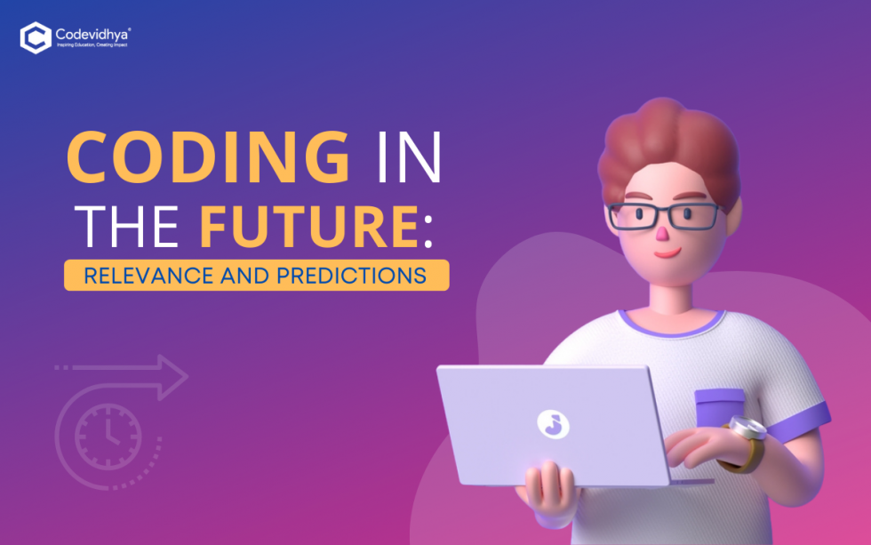

A successful coding career is built on a foundation of continuous learning, adaptability, and a passion for problem-solving. Beyond mastering programming languages and technologies, it involves understanding the principles of software design, data structures, and algorithms. Successful coders not only write efficient code but also collaborate effectively with teams, communicate ideas clearly, and iterate based on feedback. They stay updated with industry trends, embrace new tools and methodologies, and are not afraid to step out of their comfort zone to tackle complex challenges. Ultimately, a thriving coding career is marked by a relentless curiosity, a commitment to improvement, and a drive to create impactful solutions that make a difference in the world.A successful coding career is a journey that spans years of dedication, learning, and growth. It begins with a strong foundation in computer science fundamentals—understanding data structures, algorithms, and the principles of software design. This knowledge forms the bedrock upon which programmers build their expertise in various programming languages and technologies.
ChatGPT In the future, coding's relevance will continue to evolve with advancements in technology and changing societal needs. As automation and artificial intelligence expand, basic coding tasks may become more automated, but specialized skills such as algorithm design, cybersecurity, and data science will remain crucial. Emerging technologies like quantum computing and blockchain will create new opportunities, requiring coders to adapt and innovate. Moreover, the shift towards remote work and agile practices necessitates proficiency in collaborative tools and agile methodologies. Ethical considerations in coding, including privacy and algorithmic bias, will gain prominence. Continuous learning will be essential as coding languages and frameworks evolve. Overall, while the core principles of coding will endure, the ability to embrace new technologies, collaborate across disciplines, and uphold ethical standards will define the future relevance of coding.